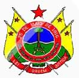

Está aberto o concurso público para ingresso na Polícia Militar do Acre - AC, na patente de Soldado PM. São 529 vagas para o sexo masculino, e 71 vagas para as mulheres. Para se inscrever, basta visitar o site da organizadora CESPE/UnB na página do concurso, preencher o formulário de inscrição e pagar a taxa no valor de R$ 70,00.
O salário inicial do soldado da PM-AC é de R$ 1.299,81 durante o período do curso de formação. Após o curso, o salário passa para R$ 1.811,58. As inscrições somente serão aceitas até o dia 26 de outubro de 2008.

Requisitos para ingresso como Soldado da PM do Acre:
- Ser brasileiro nato ou naturalizado.
- Ter, no máximo, 30 anos de idade e, no mínimo 18 anos de idade.
- Estar em dia com o serviço militar obrigatório (para os homens).
- Ser eleitor e achar-se em gozo de seus direitos políticos.
- Folha policial, militar e judicial, limpas.
- Ter aptidão física e mental.
- Altura mínima de 1,60m (homens) / 1,55m (mulheres).
- Possuir nível médio de escolaridade (2º grau).
- Ter Carteira Nacional de Habilitação em qualquer categoria.

O estilo da prova vai ser aquele clássico da CESPE/UnB mesmo, com 120 questões as quais o concursando deverá indicar CERTO ou ERRADO. A matéria que cai na prova é essa:
LÍNGUA PORTUGUESA: 1-Compreensão e interpretação de textos. 2-Ortografia oficial. 3-Acentuação gráfica. 4-Empregos das classes de palavras. 5-Pontuação. 6-Concordância nominal e verbal. 7-Regência nominal e verbal. 8-Significação das palavras. 9-Emprego do sinal indicativos de crase. 10-Tipologia textual.
ATUALIDADES: Domínio de tópicos atuais e relevantes de diversas áreas, tais como política, economia, sociedade, educação, tecnologia, energia, relações internacionais, desenvolvimento sustentável, segurança, artes e literatura e suas vinculações históricas.
HISTÓRIA DO BRASIL: 1-A sociedade colonial: economia, cultura, trabalho escravo, os bandeirantes e os jesuítas. 2-A independência e o nascimento do Estado brasileiro. 3-A organização do Estado monárquico. 4-A vida intelectual, política e artística no século XIX. 5-A organização política e econômica do Estado republicano. 6-A Primeira Guerra Mundial e seus efeitos no Brasil. 7-A revolução de 1930. 8- O Período Vargas. 9-A Segunda Guerra Mundial e os seus efeitos no Brasil. 10- Os governos democráticos, os governos militares e a Nova República. 11-A cultura do Brasil Republicano: arte e literatura. 12-História do Acre.
GEOGRAFIA DO BRASIL: 1-Organização político-administrativa do Brasil: divisão política e regional. 2-Relevo, clima, vegetação, hidrografia e fusos horários. 3-Aspectos humanos: formação étnica, crescimento demográfico. 4-Aspectos econômicos: agricultura, pecuária, extrativismos vegetal e mineral, atividades industriais e transportes. 5-A questão ambiental: degradação e políticas de meio ambiente. 6-O estado do Acre: aspectos políticos, físicos, econômicos, sociais e culturais.
LEGISLAÇÃO: Estatuto dos Militares do Estado do Acre (Lei Complementar Estadual n.° 164/2006, e alterações).
MATEMÁTICA: 1-Números inteiros, racionais e reais. 2-Sistema legal de medidas. 3-Razões e proporções. 4-Divisão proporcional. 5-Regras de três simples e compostas. 6-Percentagens. 7-Equações e inequações de 1.º e de 2.º graus. 8-Juros simples e compostos: capitalização e descontos.
RACIOCÍNIO LÓGICO: lógica sentencial e de primeira ordem; enumeração por recurso; contagem: princípio aditivo e multiplicativo.
Todas essas informações e muito mais você vai encontrar no edital, que pode ser baixado neste endereço. Em nossa página com downloads das provas anteriores não temos a da Polícia Militar do Acre, então se alguém tiver e puder enviar para ajudar os interessados, é só entrar em contato.
Bons estudos e boa sorte!